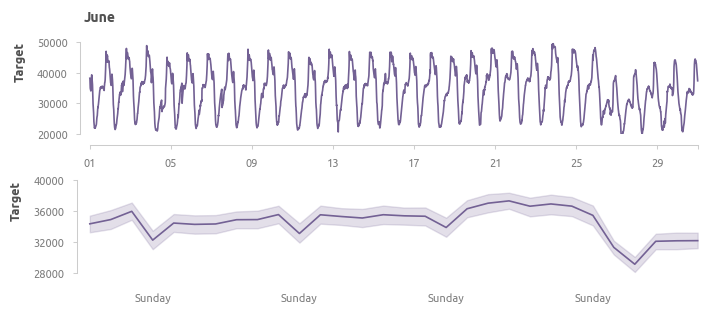

target1 - уровень потребления электроэнегии (электростанция Quads);
target2 - уровень потребления электроэнегии (электростанция Smir);
target3 - уровень потребления электроэнегии (электростанция Boussafou).
Задача первого этапа - построить авторегрессионную модель, которая учитывает множественные сезонные факторы и дополнительно сгенерированные предикторы, для прогнозирования потребления энергии, вырабатываемой электростанцией Quads (целевая переменная - target1).
Модель обучается на данных текущего месяца и прогнозирует спрос на электроэнергию в следующем месяце. Оценка и выбор модели осуществляется с помощью 5-fold кросс-валидации со скользящим окном (лаг не предусматривается). Данные за март-июль 2017 года используются для обучения, данные за август 2017 - для итоговой оценки, а данные за сентябрь 2017 - для тестирования.
В качестве предиктора используется одна дополнительно сгенерированная переменная - величина спроса на электроэнергию за предыдущий месяц в аналогичный момент времени.
Последующие этапы
дополнить предикторы с помощью библиотеки feasts языка R
обучить ML-модель и ANN для сравнения с классической авторегрессией
Исследование данных
Среднесуточное потребление в обучающих данных выглядит следующим образом.
Здесь тренд меняется дважды - в начале мая и в середине июня. По всей видимости, в первом случае изменение вызвано естественными причинами, тогда как во втором это аномальное снижение в двадцатых числах июня и последующее восстановление до естественного уровня с более высокими темпами.
Данные за май, апрель и июнь

Ярко выражена суточная сезонность, заметны провалы в воскресные дни. Аномальное снижение потребления произошло в понедельник, 26 июня.
Данные, усредненные по дням неделиДанные, усредненные по числам месяца
В первой трети месяца потреблене заметно ниже, провал 14-го числа может быть связан с региональными особенностями.
Суточные данные
Аномалии в данных
Для определения аномалий используется волатильность, рассчитанная как квадрат относительного изменения величины спроса для каждого элемента.
В первую очередь рассмотрим снижение потребления 26 июня.
На рафиках видно, что потребление снизилось для всех трёх районов города, снабажющихся соответствующими электростанциями. Веоятная причина - акции протеста 26 июня 2017 года (статья в журнале The Nation).